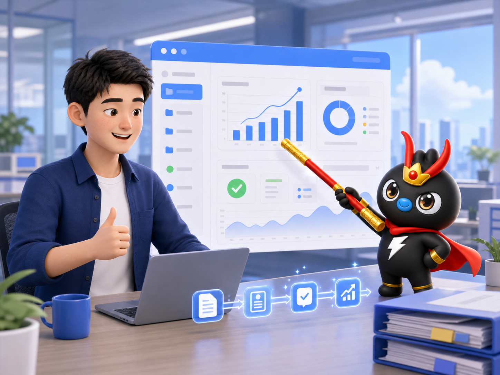
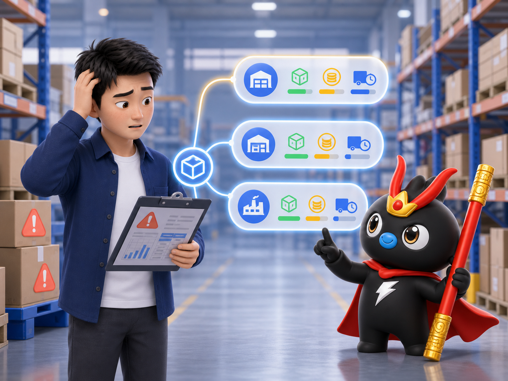
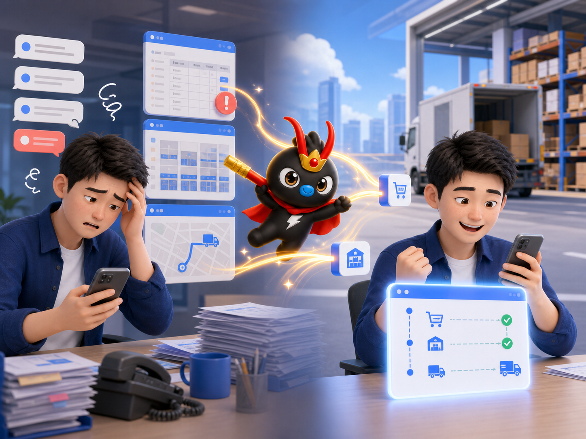

传统做法
人沿着应用跑
3 个会议邀请、5 条待审批、十几条未读消息，还有一堆文档要处理。一个个点开、阅读、处理，半小时过去了。
从对话到执行，企业智能体的新范式
康家佳品专场
3 个会议邀请、5 条待审批、十几条未读消息，还有一堆文档要处理。一个个点开、阅读、处理，半小时过去了。
说一句：“帮我整理今天的日程和待办。”悟空读取信息、归纳重点并给出下一步。
围绕康家佳品四大业务板块的真实工作场景，建立从“能做什么”到“怎么做到”的共同认知。
制度、组织协同、资源管理、经营结果
需求 → 开发 → 生产 → 质量 → 售后
品牌传播、内容营销、活动推广、销售支持
客户开发、销售转化、业务经营
让悟空能“伸手”连接金蝶 ERP、CRM、钉钉等系统与工具。
按需加载业务知识、标准流程与注意事项，让 AI 会按专业方法做事。
把钉钉功能变成 AI 能理解和调用的命令，查询之后继续执行。
订单查询、提交与审核
出入库、即时库存与批次
物料、客户与供应商
官方 WebAPI 认证，13+ 工具
Skill 本质是一份结构化指令文档：告诉 AI 能用哪些命令、该怎么调、有哪些规则和注意事项。
销售订单、采购入库、BOM、预算、质检批次。
新建审批、生成报表、归档资料、触发提醒。
例如预算超过 80% 自动预警，但关键动作仍由人确认。
消息、文档、日历、审批、表格、会议等。
AI 可理解、可组合、可追踪的操作入口。
覆盖高频企业协同与业务执行场景。
综管与财务：制度发文、预算管理、人力调配、经营分析、流程审批与财务对账。
经营周报不再依赖财务跨系统导出和手工拼表，悟空可以持续抓取、汇总和监测关键指标。

悟空接手 · 情绪 +2悟空拉取数据、生成汇总表，与销售及库存数据交叉比对并标记异常。
kingdee_query_purchase_orders
filter_string: FDocumentStatus='C' AND FDate>='2026-07-01'
按供应商聚合
交叉核对金额与状态
输出异常明细
“查看单据 F123456 的完整详情。”
kingdee_view_bill
kingdee_query_bills
字段信息、审批状态、操作日志与异常线索。
“我只记得单据号，不记得在哪个菜单。”
“直接告诉我单据号，我把详情和操作日志一起带回来。”
研发、供应链、质管与用服：需求定义 → 产品开发 → 生产交付 → 质量控制 → 售后服务。
扫描所有物料库存，低于安全库存时主动提醒负责人。
“查一下物料编码 10001 的即时库存。”
kingdee_query_inventory
返回数量、库位、批次等实时信息。
“库存还够不够？我又要登录系统查吗？”
“不用等你查，低于安全库存我主动提醒。”

从“怎么办”到“选哪个”“查询本月所有未审核的采购入库单。”
kingdee_query_stock_bills
返回单据、状态、物料明细与库位信息。
“审核这几张采购入库单。”
kingdee_audit_bills
明确单据范围
执行前人工确认
保留结果与操作记录
社群运营与品牌推广：内容创作、活动策划、素材制作、品牌传播与销售支持。
卖点、参数、交期、常见问题。
销售话术、售后 FAQ、社群文案、公众号推文。
推送对应群组，收集反馈，建立新品知识库。
小家电 B2B、厨电 B2B、海外、大客户与小画仙：客户开发、销售转化和业务经营。
可接入天眼查 MCP：ai.tianyancha.com
“查询客户编码 C001 的所有销售订单和信用情况。”
kingdee_query_sale_orders
kingdee_query_partners
历史订单
金额与状态
信用额度
逾期情况
结果可直接推送至销售手机端。
“厨电 B2B 本月完成率 85%，华东区进度落后。”
“某海外客户连续 2 个月未下单，建议主动联系。”
结合历史数据与 Q3 趋势，形成 Q4 预测参考。
“悟空，小家电 B2B 这周新增客户有多少？”
“12 家；华东少 3 家，我把落后原因和风险客户一起标出来了。”
kingdee_save_bill
kingdee_submit_bills
kingdee_audit_bills
“订单 #20260801 现在什么状态？”
悟空连接订单、入库与发货数据，直接返回预计时间。
“质检发现瑕疵，预计延期 3 天。”
自动形成通知草案，确认后同步给销售和客户。

焦虑催问 → 清晰可答MCP 连接系统，Skill 固化方法，钉钉 CLI 执行操作。
采购、销售、库存、财务
客户信息与销售记录
售后反馈与投诉数据
订单、仓储与物流追踪
消息、日历、文档、审批
产品文档、制度与项目复盘
kingdee_query_billskingdee_view_bill支持任意 form_id 查询与完整详情查看。
kingdee_query_purchase_orderskingdee_query_sale_orderskingdee_query_stock_billskingdee_query_inventorykingdee_query_materialskingdee_query_partnerskingdee_save_billkingdee_submit_billskingdee_audit_billskingdee_unaudit_billskingdee_delete_bills| 方式 | 主要问题 | 稳定性 |
|---|---|---|
| RPA 模拟点击 | 界面一变就失效 | 依赖界面 |
| 传统 API | 接口有限，每个系统不同 | 依赖集成 |
| Chatbot 助手 | 不理解界面逻辑，容易猜错 | 只会回答 |
| 钉钉 CLI | 从底层把功能表达成 AI 可理解命令 | 可组合执行 |
请说出工作中最烦琐、最重复、最希望减少人工搬运的一个场景。
涉及哪些系统、材料、判断和沟通？
读取、整理、生成、执行，分别到什么边界？
哪些动作必须由业务负责人授权？
“过去是人用钉钉来工作，
未来是 AI 用钉钉来工作。”
不是学怎么操作，而是开始思考：
哪些事，可以交给悟空做？
配置金蝶 WebAPI 账户
使用 AppSecret 方式认证
凭证保存在本地运行环境
13 个工具覆盖查询、库存、资料与单据操作。
适合用于客户实体锚定、工商信息查询与拜访准备；当前官方入口同时提供 CLI、MCP 与 Skill 三种接入方式。
锚定企业，再按需查询概要、明细与专业数据。
通过天眼查 CLI 直接查询企业与商业信息。
让 AI 助手通过 MCP 协议访问相关工具。
按场景加载 Skill，减少无关工具占用上下文。
钉钉官方开源的跨平台命令行工具，将钉钉产品能力统一到一个可组合、可审计的执行入口。
dws
帮助、预览请求与多种结构化输出格式。
结构化 JSON 响应与内置 Agent Skills。
OAuth、域名白名单、最小权限与审计。
访问官方能力中心，查看当前页面提供的 AI 能力与相关入口；实际可用范围以企业权限和页面最新展示为准。
从场景出发，找到适合团队的钉钉 AI 能力。
在浏览器中直接访问钉钉 AI 能力中心。
以页面当前展示为准，了解可用能力和接入入口。
结合高频、耗时、规则明确的任务选择首批场景。